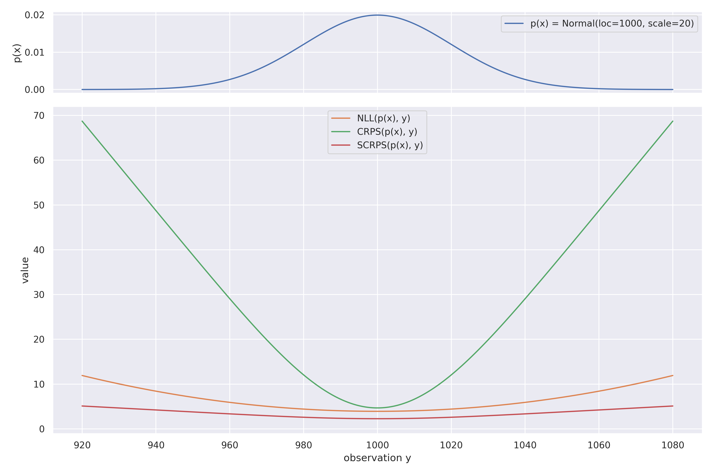
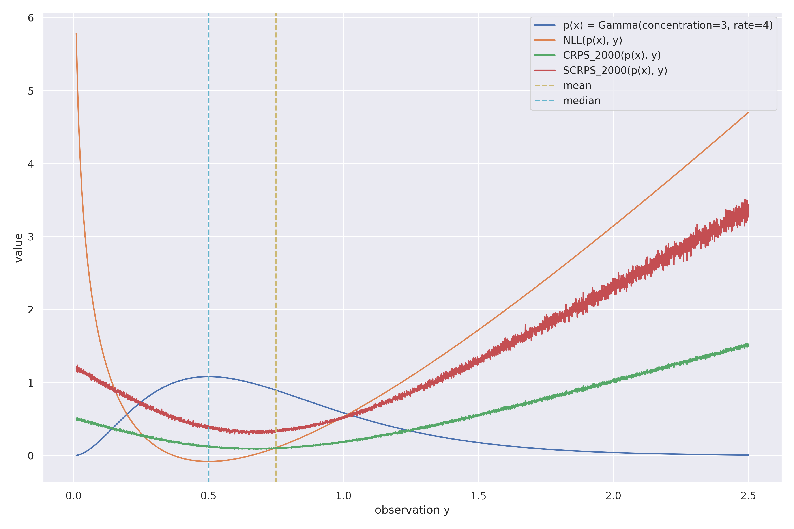
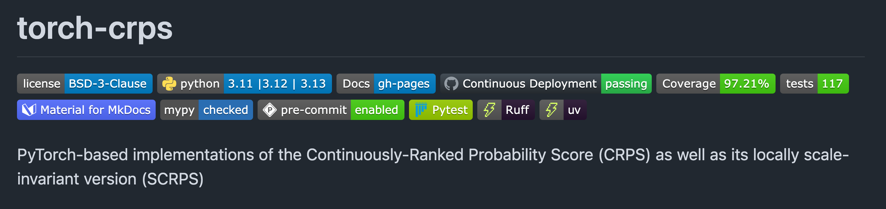

A Strictly Proper Scoring Rule for Probabilistic Forecasts
Think about a Bayesian regression problem.
To train probabilistic models you need a loss function.
The CRPS can serve as such a loss function.
Top-tier publications highlight its importance.
They all use the CRPS, or an approximation of it, as the training objective, claiming better performance than with the alternatives.
The CRPS is also used as an evaluation metric in benchmarks.
Microsoft: ProbTS (2024)
The CRPS measures the difference between a predicted cumulative distribution function (CDF) and the empirical CDF of the actual observation.
$$ \CRPS(F, y) = \int_{-\infty}^{\infty} \big( F(x) - \mathbb{1}_{x \ge y} \big)^2 dx $$
| $X$ | the random variable representing the forecast |
| $x$ | realization of $X$ |
| $F(X)$ | CDF of the forecaster |
| $y$ | observed value (ground truth) |
| $\mathbb{1}_{x \ge y}$ | indicator function := 1 if $x \ge y$, else 0 |
$$ \CRPS(F, y) = \int_{-\infty}^{\infty} \big( F(x) - \mathbb{1}_{x \ge y} \big)^2 dx $$
The closer the CDF is to a step function at the observed value,
the lower the CRPS, the better the forecaster.
| $S(\cdot, \cdot)$ | a scoring rule ("distance measure") |
| $P$ | the true distribution |
| $Q$ | the forecasted distribution |
A (negatively-oriented) scoring rule is proper if
$$ S(P, P) \le S(Q, P) $$
and strictly proper if
$$ S(Q, P) = S(P, P) \Longleftrightarrow Q = P $$
A scoring rule is proper if the expected score $\mathbb{E}_{Y \sim P}[S(Q, Y)]$ is minimized when the forecast distribution matches the true distribution of the observation Gneiting (2007).
"A proper scoring rule cannot be gamed"
A financial analyst is tasked with forecasting the next day's percentage change for a particular stock
The score is the value of the forecasted distribution curve at the point of the actual outcome. Higher is better.
"How likely did you say the actual outcome was?"
The forecaster's honest belief is $\mathcal{N}(0.03, 0.07^2)$
But the forecaster's is rewarded for reporting overconfidently, e.g. $\mathcal{N}(0.03, 0.01^2)$
Imagine the output was 0.031
This is not the same as the log score, which is proper.
$X$ forecast's random variable $F$ forecast's CDF $y$ observed variable
$$ \CRPS_{\text{int}}(F, y) = \int_{-\infty}^{\infty} \big( F(x) - \mathbb{1}_{x \ge y} \big)^2 dx $$
$$ \CRPS_{\text{pwm}}(F, y) = \mathbb{E}_{X} \big[|X - y| \big] + \mathbb{E}_{X} \big[X \big] - 2 \mathbb{E}_{X} \big[X F(X) \big] $$
$$ \CRPS_{\text{nrg}}(F, y) = \mathbb{E}_{X} \big[|X - y| \big] - \frac{1}{2} \mathbb{E}_{X,X'} \big[ |X - X'| \big] \vphantom{\underbrace{\mathbb{E}_{X} \big[|X - y| \big]}_{\text{accuracy} = A} - \frac{1}{2} \underbrace{\mathbb{E}_{X,X'} \big[ |X - X'| \big]}_{\text{dispersion} = D}} $$
$$ \CRPS_{\text{nrg}}(F, y) = \underbrace{\mathbb{E}_{X} \big[|X - y| \big]}_{\text{accuracy} = A} - \frac{1}{2} \underbrace{\mathbb{E}_{X,X'} \big[ |X - X'| \big]}_{\text{dispersion} = D} $$
The CRPS can be seen as a generalization of the Mean Absolute Error (MAE) for probabilistic forecasts,
since $D = 0$ for a deterministic forecaster.
$$ \CRPS(F, y) = \underbrace{\mathbb{E}_{X} \big[|X - y| \big]}_{\text{accuracy = MAE}} - \frac{1}{2} D $$
$$\text{BS} = \frac{1}{N} \sum_{i=1}^{N} \big(x_i - \mathbb{1}(y_i = 1) \big)^2 $$
| $x_i$ | i-th forecast |
| $y_i$ | i-th observed binary value (ground truth) |
While the quantile loss evaluates a single slice of the CDF $F$, the CRPS evaluates the entire $F$ by evaluating the loss at every possible quantile $q_{\alpha} = F^{-1}(\alpha)$.
$$ \CRPS(F, y) = 2 \int_{0}^{1} \QL_{\alpha}(y, q_{\alpha}) \, d\alpha $$
The quantile loss for a level $\alpha \in [0, 1]$ evaluates the predicted quantile $q_\alpha = F^{-1}(\alpha)$ is
$$ \begin{align*} \QL_{\alpha}(y, x) &= \begin{cases} \alpha (y - x) & \text{if } y \geq x \\ (1 - \alpha) (x - y) & \text{if } y < x \end{cases} \\ &= (y - x) \big( \alpha \mathbb{1}_{y \geq x} - (1 - \alpha) \mathbb{1}_{y < x} \big) \\ &= (y - x) (\alpha - \mathbb{1}_{y < x}) \end{align*} $$
Thus for the median it is: $ \QL_{\alpha = 0.5}(y, x) = 0.5 |y - x| $
Consider Bayesian regression with data of shape of (B, T, C).
inputs/targets
predictions
The most common solution is to evaluate all B · T · C datapoints independently, i.e., takeing the mean over all.
The most common solution is to evaluate all B · T · C datapoints independently, i.e., takeing the mean over all.
The batch dim is independent by construction.
The channel dim is treated as independent for simplicity.
There is a multi-variate extension. Zheng & Sun (2025)
The time dim is generally treated as independent for scores.
(the model's forecast can still have sequential dependencies)
Do you notice something about the value range?
$$ \CRPS_{\text{int}}(F, y) = \int_{-\infty}^{\infty} \big( F(x) - \mathbb{1}_{x \ge y} \big)^2 dx $$
$$ \CRPS_{\text{nrg}}(F, y) = \mathbb{E}_{X} \big[|X - y| \big] - \frac{1}{2} \mathbb{E}_{X,X'} \big[ |X - X'| \big]$$
The CRPS depends on the scale of the random variable.
Training a ML model with a loss that scales with the forecast's magnitude is unfavorable.
Consider a change of unit: kilogram → gram
We would need to re-scale each channel individually,
or live with an implicit bias.
This problem is particularly pronounced for time series data.
The values of RGB images are in [0, 255]
Natural languages have a finite set of words
For example for a univariate normal distribution, the NLL at the observation $y$ is
$$\text{NLL}(F_{\mu,\sigma}, y) = - \log(\sigma) + \frac{(y - \mu)^2}{2 \sigma^2}$$
link to derivation of NLL for normal distributionIt is locally-scale invariant because of the division by $\sigma^2$
$$ \begin{align*} \SCRPS(F, y) &= \frac{\mathbb{E}_X\big[|X - y| \big]} {\mathbb{E}_{X,X'} \big[ |X - X'| \big]} + \frac{1}{2} \log \big( \mathbb{E}_{X,X'} \big[ |X - X'| \big] \big) \\[2ex] &\phantom{= \frac{A}{D} + \frac{1}{2} \log(D)} \\[2ex] \phantom{\CRPS(F, y)} &\phantom{= A - \frac{1}{2} D} \end{align*}$$
$$ \begin{align*} \SCRPS(F, y) &= \frac{\mathbb{E}_X\big[|X - y| \big]} {\mathbb{E}_{X,X'} \big[ |X - X'| \big]} + \frac{1}{2} \log \big( \mathbb{E}_{X,X'} \big[ |X - X'| \big] \big) \\[2ex] &= \frac{A}{D} + \frac{1}{2} \log(D) \\[2ex] \phantom{\CRPS(F, y)} &\phantom{= A - \frac{1}{2} D} \end{align*}$$
$$ \begin{align*} \SCRPS(F, y) &= \frac{\mathbb{E}_X\big[|X - y| \big]} {\mathbb{E}_{X,X'} \big[ |X - X'| \big]} + \frac{1}{2} \log \big( \mathbb{E}_{X,X'} \big[ |X - X'| \big] \big) \\[2ex] &= \frac{A}{D} + \frac{1}{2} \log(D) \\[2ex] \CRPS(F, y) &= A - \frac{1}{2} D \end{align*}$$
Being locally scale-invariant means to adjusts the score based on the predictive uncertainty for that specific observation.
A fruit growing contest for watermelons ($\mu_w = 10 kg$ , $\sigma_w = 2 kg$) and apples ($\mu_a = 200 g$ , $\sigma_a = 10 g$). The goal is to produce average-sized fruits.
| no invariance: absolute error | The Watermelon farmer is penalized more, simply because their fruit is bigger. Imagine a difference of 200 g. |
| global invariance: absolute percentage error | The Apple farmer is penalized more, as we moved to comparing ratios. Imagine a difference of 10 g. |
| local invariance: absolute error / standard deviation | The farmers are judged by how impressive the accuracy is relative to the difficulty of their specific fruit. |

Imagine a 2nd variable with $\mathcal{N}(\mu=1, \sigma=0.02)$.

The (S)CRPS for the Gamma distribution was estimated from samples.
Their minima are generally not at the same location.
A trade-off between computational simplicity and expressive power.
| CRPS | NLL | |
|---|---|---|
| Focus | Provides a holistic view of forecast quality, rewarding both calibration and overall sharpness. | Focuses on the forecast's performance at the one specific point that occurred. |
| Robustness | Less sensitive to single, surprising "black swan" events as it integrates over all possibilities. | A single outcome in a low-probability region can cause the score to explode towards infinity. |
| Interpretability | Score is in the same units as the observation. | Score is in abstract "nats" or "bits", and has no intuitive meaning. |
| Computation | Simple if a closed-form solution exists. Can be intensive if numerical integration is needed. | Generally simple and fast, as it only requires evaluating the PDF at a single point. |

pip install torch-crps
| Type of forecasting distribution $F(X)$ | |||
|---|---|---|---|
| Normal | StudentT | any sampleable | |
| CRPS | ✓ | ✓ | ✓ |
| SCRPS | ✓ | ✓ | ✓ |
| ✓ | frequently available (in popular libraries) |
| ✓ | rarely available (almost exclusively in R) |
| ✓ | available only in the torch-crps package |
How to implement $ \CRPS(F, y) = \mathbb{E}_{X} \big[|X - y| \big] - \frac{1}{2} \mathbb{E}_{X,X'} \big[ |X - X'| \big] ?$
$A = \mathbb{E}_{X} \big[|X - y| \big]$ is trivial,
$D = \mathbb{E}_{X,X'} \big[ |X - X'| \big]$ is not.
def dispersion_ensemble_naive(x: torch.Tensor) -> torch.Tensor:
"""Compute dispersion term $D = E[|X - X'|]$ for an ensemble forecast.
Args:
x: The ensemble predictions, of shape (*batch_shape, dim_ensemble).
Returns:
Dispersion values for each observation, of shape (*batch_shape).
"""
# Create a matrix of all pairwise differences between the
# m ensemble members.
x_i = x.unsqueeze(-1) # shape: (*batch_shape, m, 1)
x_j = x.unsqueeze(-2) # shape: (*batch_shape, 1, m)
pairwise_diffs = x_i - x_j # shape: (*batch_shape, m, m)
# Take the absolute value of every element in the matrix.
abs_pairwise_diffs = torch.abs(pairwise_diffs) # shape: (*batch_shape, m, m)
# Calculate the mean of the m x m matrix for each batch item, i.e,
# not the batch shapes. This divides by m².
dispersion = abs_pairwise_diffs.mean(dim=(-2, -1)) # shape: (*batch_shape)
return dispersion
What is the computational complexity of these steps?
# Create a matrix of all pairwise differences between the
# m ensemble members.
x_i = x.unsqueeze(-1) # shape: (*batch_shape, m, 1)
x_j = x.unsqueeze(-2) # shape: (*batch_shape, 1, m)
pairwise_diffs = x_i - x_j # shape: (*batch_shape, m, m)
# Take the absolute value of every element in the matrix.
abs_pairwise_diffs = torch.abs(pairwise_diffs) # shape: (*batch_shape, m, m)
It is O(m²) for each batch item.
We can do the same in O(m log(m)) when exploiting the symmetry of the $D$ matrix Nvidia (2025).
def dispersion_ensemble(x: torch.Tensor) -> torch.Tensor:
"""Compute dispersion term $D = E[|X - X'|]$ for an ensemble forecast.
Args:
x: The ensemble predictions, of shape (*batch_shape, dim_ensemble).
Returns:
Dispersion values for each observation, of shape (*batch_shape).
"""
# Sort the predictions along the ensemble member dimension.
x_sorted, _ = torch.sort(x, dim=-1)
# Calculate the coefficients (2i - m - 1) for the linear-time sum.
# These are the same for every item in the batch.
m = x.shape[-1] # number of ensemble members
coeffs = 2 * torch.arange(1, m + 1, device=x.device) - m - 1
# Calculate the sum Σᵢ (2i - m - 1)xᵢ for each forecast in the batch
# along the member dimension. This only sums over a single dimension.
x_sum = torch.sum(coeffs * x_sorted, dim=-1)
# Calculate the full expectation E[|X - X'|] = 2 / m² * Σᵢ (2i - m - 1)xᵢ.
# This is half the mean absolute difference between all pairs of predictions.
dispersion = 2 * x_sum / m**2
return dispersion
The problem: naive double summation
$$ \mathbb{E}\big[|X - X'|\big] = \frac{1}{M^2} \sum_{i=1}^{M} \sum_{j=1}^{M} |x_i - x_j|$$The insight: sort the ensemble
$$ \tilde{x}_1 \le \tilde{x}_2 \le \dots \le \tilde{x}_M $$
Due to symmetry, we can write
$$ \mathbb{E}\big[|X - X'|\big] = \frac{2}{M^2} \underbrace{\sum_{1 \le i < j \le M}}_{\text{ upper triangle}} |\tilde{x}_i - \tilde{x}_j| = \frac{2}{M^2} \sum_{1 \le i < j \le M} \underbrace{(\tilde{x}_j - \tilde{x}_i)}_{\ge 0}$$
By sorting the ensemble members $\tilde{x}$, we can remove the absolute value, since for $i < j$, we know $\tilde{x}_j \ge \tilde{x}_i$.
$$\sum_{1 \le i < j \le M} (\tilde{x}_j - \tilde{x}_i) \quad \text{for} \quad M=4$$
| $j=1$ | $j=2$ | $j=3$ | $j=4$ | |
|---|---|---|---|---|
| $i=1$ | 0 | $x'_{1} - x'_{2}$ | $x'_{1} - x'_{3}$ | $x'_{1} - x'_{4}$ |
| $i=2$ | . | 0 | $x'_{2} - x'_{3}$ | $x'_{2} - x'_{4}$ |
| $i=3$ | . | . | 0 | $x'_{3} - x'_{4}$ |
| $i=4$ | . | . | . | 0 |
We expand the sum and count how many times each sorted element $\tilde{x}_k$ appears.
$$ \sum_{1 \le i < j \le M} (\tilde{x}_j - \tilde{x}_i) = \sum_{k=1}^{M} (\text{count}(+\tilde{x}_k) - \text{count}(-\tilde{x}_k)) \cdot \tilde{x}_k \\ \text{1. } \tilde{x}_k \text{ is added } (k-1) \text{ times (when } j=k, i < k). \\ \text{2. } \tilde{x}_k \text{ is subtracted } (M-k) \text{ times (when } i=k, j > k). \\ \text{The coefficient for } \tilde{x}_k \text{ is } (k-1) - (M-k) = 2k - M - 1. $$
This gives a final formula with O(M log(M)) complexity, dominated by the initial sort.
$$ \mathbb{E}\big[|X - X'|\big] = \frac{2}{M^2} \sum_{k=1}^{M} (2k - M - 1) \tilde{x}_k $$